Photonic Quantum Sampling and Generative AI: Can Starting Distributions Change Molecular Design?
What changes when number vectors drawn from photon interference enter a classical generative model: improvements in molecular generation, stronger classical baselines, and the conditions for moving into protein design
TECH REVIEW · October 23, 2026 · Quantum optics, generative models, and molecular design

Contents
- 1. Why does molecular generation begin with random numbers?
- 2. Why the starting point can leave a trace in the result
- 3. Two photons reveal a different probability rule
- 4. When a complex starting distribution remains complex at the output
- 5. What increased in molecular generation?
- 6. What happened when the classical baseline was tuned?
- 7. A small classical run illustrates the effect of the starting distribution
- 8. How to read an announcement about generating proteins
- 9. Count good candidates alongside the total computation cost
- References and reproduction materials
1. Why does molecular generation begin with random numbers?
Imagine giving an AI that proposes new molecules a vector of random numbers as its very first input. The numbers show no atoms or bonds, yet after passing through a trained neural network they become a molecular candidate with atom types and connections. A generative model gives this seemingly meaningless starting point structure learned from data. Could the search for better candidates therefore begin with the way those numbers are drawn?
Rolling dice is a useful analogy, but the issue here is less the unpredictability of a single number than the rules governing which numbers appear together. Some combinations occur frequently and others rarely: randomness itself has structure. A generative model encounters that structure repeatedly during training. Changing the distribution of its starting points can lead even networks of the same size to learn different transformations.
Researchers at ORCA Computing explored creating that starting point through photon interference. They turn the numbers of photons detected at the outputs of an optical circuit into number vectors, then use them as inputs to a classical neural network. The idea is to use the joint probability rules produced by light as a resource for molecular generation. [2]
The study contains both results in which a quantum distribution performs better and results in which changing the classical training conditions reduces or eliminates the gap. The answer is conditional. Photonic quantum latent distributions improved the quality of some generative models, but the effect depends on the data, model, and training conditions. Practical quantum advantage in protein design has not been established. [2,10–12]
Mervin Praison’s post and the linked article that prompted this review summarize a talk by Richard Murray. They cover both using AI to improve quantum devices and incorporating quantum computation into AI. Here we focus on the latter, distinguishing the ICML 2026 paper and public code from the subsequent protein-design announcements. [1–3]
2. Why the starting point can leave a trace in the result
Among all the candidates that can be assembled by combining atoms and bonds, chemically valid molecules occupy only a small region. Connecting atoms arbitrarily can violate valence rules or produce candidates far removed from the chemical characteristics of the training data. A generative model must learn where molecule-like candidates are concentrated in this space and propose samples from those regions. The molecular generator discussed here outputs graphs of atoms and bonds. Generating a protein’s three-dimensional backbone is a separate problem, addressed later. [7,8]
A generative adversarial network (GAN) trains a generator and a discriminator together. The generator produces candidates, while the discriminator learns to distinguish generated results from training data. The generator is updated to reduce that difference. The input number vector is called a latent variable, and the probability law from which it is drawn is the latent distribution. A simple Gaussian distribution is a common starting point, but there is no requirement to use one fixed starting distribution. [4]
In compact notation,

Here
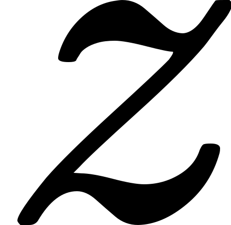
is the input number vector, the starting distribution, and
the starting distribution, and  the generator with learned parameters
the generator with learned parameters 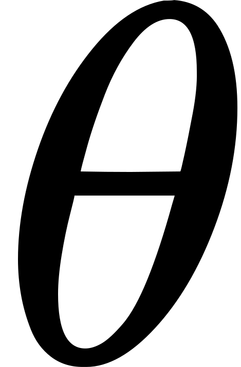
. The generated result is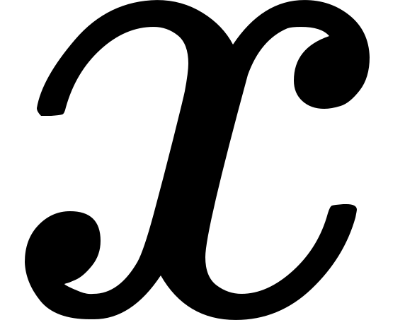
. The final expression denotes the output distribution obtained by passing the starting points through the generator. The same starting point can be sent to different destinations by different trained generators, and generators of the same kind can learn different parameters depending on which starting points they encounter and how often.Think of drawing a map on a sheet of rubber and stretching it. If the starting points form one dense group rather than several separate groups, the deformation needed to send them to several islands on the target map will differ. A neural network is not literally a rubber sheet, and this analogy does not mean that Gaussian inputs are fundamentally incapable of generating data with several clusters. The question is what can be learned readily within the allowed model size, transformation capacity, and training time.
The diagram below identifies the quantum device’s specific role. The optical device supplies samples; classical computation performs the transformation into molecular candidates and the training. In the comparison experiments, models with the same architecture are trained separately for each starting distribution. This differs from swapping the inputs of one already trained model. [2]
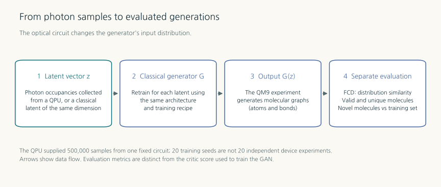
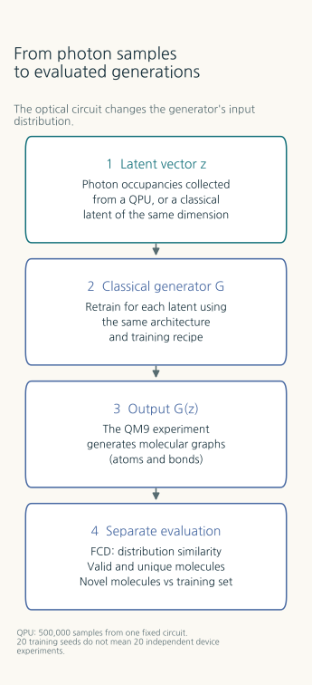
3. Two photons reveal a different probability rule
What is special about samples produced by photons? Consider the smallest example: one photon entering each input of an ideal 50:50 beam splitter, which divides light equally. If the two photons can be distinguished, their paths can be counted independently. They leave through separate outputs half the time, while the two possibilities in which both leave through the same output each have probability one quarter.
The probabilities change when the photons arrive together and are completely indistinguishable in timing, polarization, spectrum, and other relevant properties. The probability amplitudes for one photon to emerge at each output cancel. Only the two outcomes in which the photons emerge together remain, each with probability one half. This is the ideal Hong–Ou–Mandel interference effect. It is not explained by photons pushing one another like small balls. The amplitudes of indistinguishable alternatives must be added before taking the squared magnitude. [5]
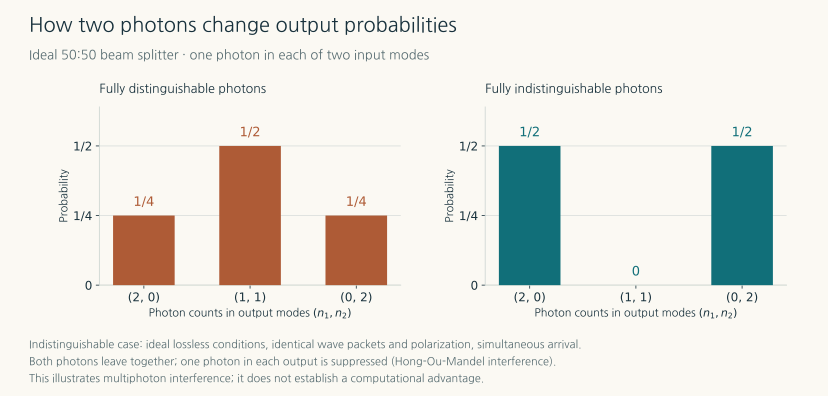
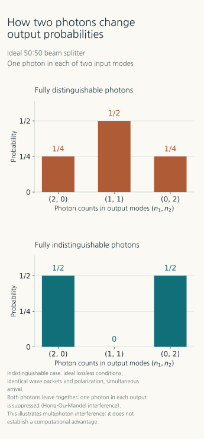
With more output ports, the number vector becomes an occupation-number vector recording how many photons appear at each port. For indistinguishable photons in an ideal linear optical system, calculating output probabilities involves a matrix function called the permanent, which sums amplitudes associated with different paths. Research on the computational complexity of boson sampling asks when drawing approximate samples from such a distribution is difficult for a classical computer. The hardness claims depend on the circuit family, errors, photon loss, and assumptions in computational complexity. They do not guarantee that a particular small circuit cannot be calculated classically. [2,6]
These joint-distribution samples are also what the generative model needs. Changing the rules by which the components of the starting vector vary together changes the structure of the inputs the generator encounters. The comparisons therefore need more than a Gaussian distribution: they also need a distribution produced by making the photons distinguishable in the same optical circuit. This control retains the optical-path conditions while helping isolate the effect of multiphoton interference. [2]
4. When a complex starting distribution remains complex at the output
A quantum input distribution does not necessarily leave its properties intact at the output. A generator that maps every input to the same number makes the point immediately: all the input’s complex structure disappears during the transformation. The theory must therefore first establish which generators preserve information about the starting point.
The ICML paper places conditions on an efficiently computable generator and its inverse. The starting point must be recoverable efficiently from the output, and Lipschitz conditions are needed to prevent small output errors from being amplified uncontrollably by the inverse transformation. The theory begins with a family of distributions that can be sampled efficiently with quantum computation but are assumed not to admit efficient classical approximate sampling. The inverse function’s Lipschitz constant must also be controlled uniformly across problem sizes. Under these conditions, if the output could be sampled easily by a classical computer, the inverse transformation would also make the original quantum distribution easy to sample. [2, §3 and Appendix A]
The objects under discussion are families of distributions and generators as the problem grows, together with approximation errors. This is not a test that can be applied directly to a single finite photonic experiment. The theorem is a conditional result about the computational representability of output distributions. It does not directly guarantee successful neural-network training or a larger number of good molecules on QM9. Nor does it prove that QM9 itself belongs to a family of quantum distributions that is difficult to sample classically.
Nevertheless, the theory indicates what an experiment should look for. When a generator with limited capacity struggles to transform a simple starting distribution into the structure of the target data, a different starting distribution that fits that structure may help. The paper also describes this in terms of inductive bias: properties of the input that steer learning toward particular patterns. Useful correlations can also occur in classical distributions, making strong classical controls and adequate tuning the next questions. [2]
5. What increased in molecular generation?
QM9 is a dataset of small organic molecules containing at most nine non-hydrogen atoms. The researchers supplied different latent distributions to a modified MolGAN classical generator and evaluated the molecular graphs obtained from 10,000 generation attempts. They distinguished whether candidates passed formal chemical checks on atom connectivity, how many remained after duplicates were removed, and how many were absent from the training set. These checks alone do not establish practical synthesizability, stability, or therapeutic activity. [2,7,8]
To assess properties of the molecular collection as a whole, they also used Fréchet ChemNet Distance (FCD). This distance maps molecules into the feature space of the ChemNet neural network and compares the statistics of the generated and reference sets; lower values indicate greater similarity. The number of valid candidates and FCD answer different questions. The former counts the candidates that remain, while the latter asks how closely their feature distribution resembles that of the reference molecules. [9]
In Table 4 of the paper, which uses the physical PT-2 device, the mean number of valid, distinct molecular graphs was 1,962±75. Gaussian inputs produced 1,320±53, while the distinguishable-photon control distribution produced 1,638±102. The ± values are standard errors of the mean across 20 training seeds. They do not mean that the device circuit was independently implemented anew 20 times. The hardware starting distribution in this experiment reused samples collected from one fixed optical circuit. [2, Table 4 and Appendix E]
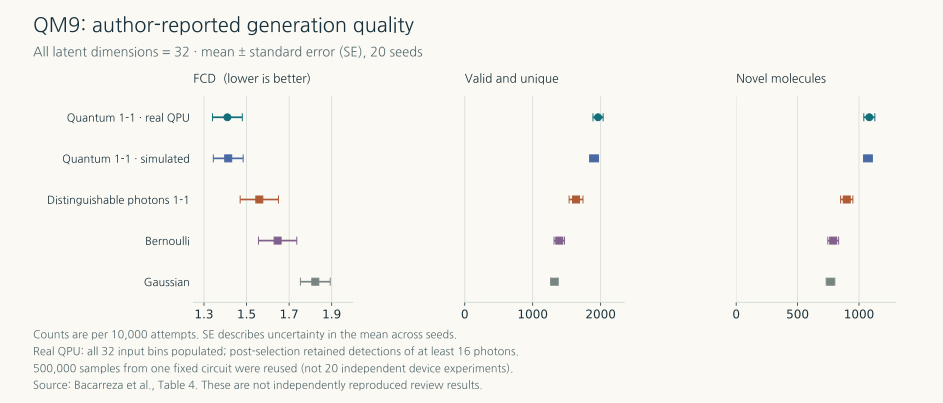
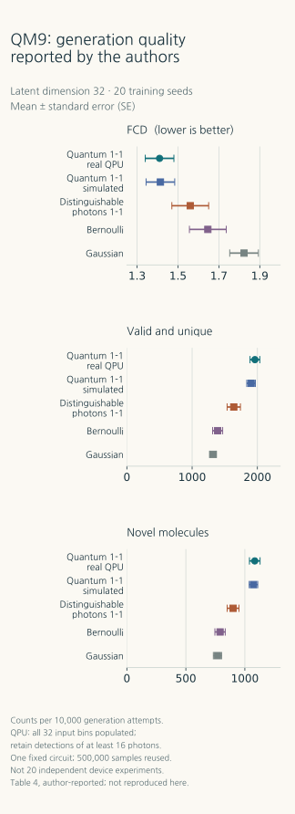
Calculating the increase over the Gaussian baseline gives approximately 48.6%. With all generation attempts as the denominator, the proportion rises from 13.20% to 19.62%, a difference of 6.42 percentage points. The relative increase over the distinguishable-photon control in the same optical system is approximately 19.8%. This is why the comparator attached to a “49% improvement” matters. These ratios are arithmetic calculations from the reported means; without paired seed-level data, this review did not estimate new confidence intervals for the increases.
FCD was also reported as 1.410±0.07 for PT-2 and 1.823±0.07 for Gaussian inputs. However, combining these with tables using other dimensions and circuits does not justify saying that quantum distributions were always best on every metric. In the same paper’s classical-simulation comparisons, other classical distributions had numerically lower FCD in some dimensions. The result demonstrates a change in generation quality under the selected settings. [2, Tables 2 and 4]
6. What happened when the classical baseline was tuned?
Assessing the preceding differences also requires reading the experiments in the same paper that did not work as well. Appendix H reports no statistically significant differences between methods in a QM9 setting that changed the learning rate, probability of data-permutation augmentation, and number of training steps. Its circuit and training conditions differ from those of the physical PT-2 experiment in Table 4, so it should not be treated as a direct rerun replacing the two preceding rows. It nevertheless provides direct evidence that the effects of the starting distribution and the training method must be considered together. [2, Appendix H]
Quantum distributions did not always help in image generation either. The StyleGAN experiment on CIFAR-10 showed no improvement, and experiments with a diffusion-based GAN demonstrated that different distributions could be used without reporting a clear performance advantage. If a classical model with Gaussian inputs can resolve a difficulty through a suitable architecture and training method, the reason for adding another device must be reconsidered. [2]
There is thus a gap between computational complexity and application quality that experiments must bridge. Even if reproducing every detail of a distribution is difficult, a classical approximation to just the statistics the generator actually uses might still achieve similar quality. This motivates comparisons with trainable classical priors, normalizing flows, and noise-aware photonic simulations. The comparisons in this paper should not be read as the ultimate performance of every possible classical model. [2, §5]
7. A small classical run illustrates the effect of the starting distribution
For this review, we inspected a pinned version of the public code and ran a limited CPU example generating seven small clusters of points. It used three starting distributions: Gaussian, a distinguishable-photon control, and a classical simulation of indistinguishable-photon statistics. The optical simulation has a single loop with 8 input photons and 16 time bins. It differs from the paper’s 1–3–9 multiple-loop arrangement in Figure 1, so this run is not described as a reproduction of that figure or the molecular experiment. [3,14]
WGAN-GP models with the same architecture were each trained for 5,000 steps. The generator maps a 16-dimensional input through two hidden layers of 256 neurons to a point in the plane. We used one training seed, 20261023, a batch size of 32, and a learning rate of 0.0005. The distinguishable-photon control, whose photons independently follow the same optical transformation, was implemented separately. Exact enumeration of small two-photon cases and unitarity checks were used to verify probability and photon-number conditions. The simulation is small enough to run on a classical computer.
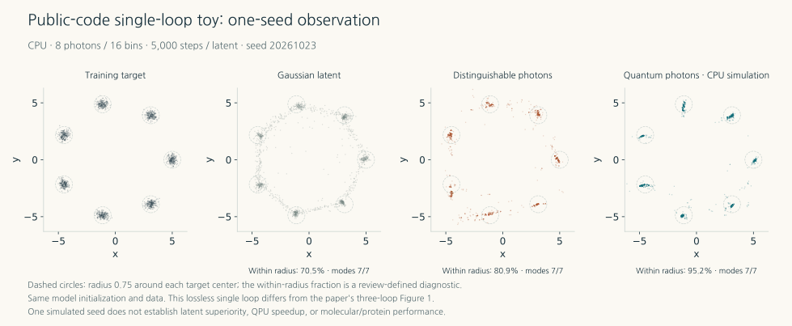
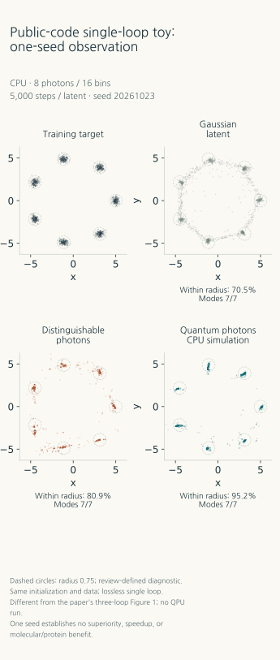
Look at how many generated points remain in the empty regions between the seven clusters. In this one run, all three models found the seven locations, but different numbers of points were scattered between them. We defined a diagnostic as the fraction of points within a distance of 0.75 from any cluster center. Among 10,000 evaluation points, the fractions were 70.50% for Gaussian inputs, 80.87% for distinguishable photons, and 95.20% for the indistinguishable-photon simulation. The coordinates are dimensionless values for this synthetic dataset, and this diagnostic is not one of the paper’s molecular metrics.
This example makes visible how generators of the same kind can learn differently when given different starting distributions. It does not establish a general ranking, because multiple training seeds, circuits, training durations, and stronger classical priors were not compared. The paper itself includes cases in which longer training reduced the gap on a small example. Treating this favorable snapshot as evidence of quantum advantage would miss the lesson of the preceding section.
8. How to read an announcement about generating proteins
Moving from small-molecule graphs to proteins changes both the object being generated and the evaluation method. NVIDIA’s original Proteína is a flow-matching model that generates coordinates for a protein’s Cα backbone. It follows a learned flow from random coordinates to propose protein-like backbones. Predicting an existing structure from a protein sequence and proposing a new structural candidate are different tasks. [10]
In October 2026, ORCA announced an extension of Proteína using PT-3 and 32 NVIDIA Hopper GPUs. It described device resources of 64 photons and 128 optical modes, reported a 20% improvement in the proportion of useful proteins, and stated that the secondary-structure composition had changed. NVIDIA also presents this result as ORCA’s report. These resource counts must not be reinterpreted as numbers of error-corrected logical qubits. [11,12]
To understand the background to this announcement, consider the original Proteína evaluation method. The public materials do not establish whether the PT-3 extension followed the procedure below unchanged. The key is what designability measures. For each generated backbone, the original Proteína paper proposes eight sequences with ProteinMPNN and folds them with ESMFold. A backbone is counted as passing if the best-matching structure has a self-consistency RMSD (scRMSD) below 2 Å. An ångström is 0.1 nm. To calculate scRMSD, corresponding Cα atoms in the generated and repredicted backbones are optimally aligned by rotation and translation, and the root mean square of their positional differences is taken. Passing this test means that a computationally consistent sequence–structure pair was obtained; synthesis, stability, binding strength, and therapeutic efficacy are separate questions for subsequent experiments. [10, Appendix F]
The public announcement does not establish whether PT-3 used that original evaluation procedure unchanged, what baseline and denominator underlie the 20% figure, or how it compares with a classical baseline using the same computation budget. Our search did not identify a corresponding paper, code, or seed-level results for this extension. Explaining the original model’s metric therefore does not mean that the detailed evaluation of the PT-3 result has been verified. A change in secondary-structure composition alone also does not establish improvements in both diversity and novelty.
Laboratory results from another study should not be used to fill these gaps. A separate PT-2 study generated the sequences of MHC-binding peptides and used ELISA to evaluate whether selected candidates stabilized peptide–MHC complexes. Its research target, model, and evaluation stage differ from Proteína backbone generation. The computational QM9 candidates, the separate peptide experiments, and the PT-3 protein announcement must each be read under their own conditions. [13]
| Study | Generation and evaluation target | Evidence established in this review |
|---|---|---|
| ICML / PT-2 QM9 | Small-molecule graphs; valid, unique, and outside-training-set candidates; FCD | Peer-reviewed paper and tables comparing device samples, classical simulation, and classical controls |
| PT-2 peptides | MHC-binding peptide sequences, with separate complex-stabilization tests | A separate preprint and code; not combined with the Proteína results |
| PT-3 Proteína extension | Protein-backbone generation and claimed improvement in designability | Vendor and partner announcements; detailed evaluation and reproduction materials for the extension were not identified in this investigation |
9. Count good candidates alongside the total computation cost
For a starting distribution that improves quality to become a practical tool, the cost of obtaining its samples must also be manageable. The physical PT-2 study populated 32 input time bins and used postselection to discard trials with fewer than 16 detected photons. The researchers explain that this approximately emulates 16 photons in 32 channels with random input positions. It therefore cannot be simplified to an ideal device that receives exactly 16 photons and detects all 16 on every trial. [2, Appendix B]
Collecting 500,000 samples from the fixed circuit took 40 minutes. Because this sample pool can be reused across training runs, neither charging 40 minutes anew for every run nor ignoring the collection cost is appropriate. The accounting must state how classical GPU training, optical control and detection, discarded trials, communication, and sample storage are allocated across uses. [2]
Comparing quality at matched model size, data, and training conditions is a different experiment from comparing the total time, energy, and cost required to reach the same final quality. Directly juxtaposing classical-simulation times and device-collection times with different photon or mode counts changes the comparison and cannot justify a speedup ratio. The paper’s evidence alone does not establish faster AI training overall or reduced energy consumption.
We can now answer the opening question more precisely. Changing the rules for drawing random numbers can change both what a generative model learns and the candidates it proposes. Distributions obtained from photon interference offer a new starting point with which to test that possibility, and improvements in molecular generation have been reported under specific conditions. The same work also reports cases in which tuning the classical training conditions reduced or eliminated the benefit. To carry such a benefit into protein design, researchers must show what was generated and which tests it passed, alongside sufficient classical comparisons and the full cost. The value of a starting point supplied by light lies in the difference that remains after following that process through to the end.
References and reproduction materials
- Praison, M. A Quantum Computer Beside the GPUs. 2026-10-20. Talk-summary article. The article linked from the shared post, distinguished here from the primary sources of scientific numbers.
- Bacarreza, O. et al. Quantum latent distributions in deep generative models. ICML 2026, PMLR 306, 4740–4760. Publication record, published PDF, arXiv v3. Checked §3–5, Tables 2/4, and Appendices B/E/H.
- ORCA Computing. Pinned version of the official code, commit
b950127d3584561fee4aea4af566bcce697d6946. Apache-2.0. Checked differences between the public example and the paper’s circuit, and the scope not covered by public reproduction materials. - Goodfellow, I. et al. Generative Adversarial Nets. NeurIPS 2014. Paper.
- Hong, C. K., Ou, Z. Y. & Mandel, L. Measurement of subpicosecond time intervals between two photons by interference. Physical Review Letters 59, 2044–2046 (1987). DOI.
- Aaronson, S. & Arkhipov, A. The Computational Complexity of Linear Optics. Original paper. Complexity assumptions and scope of boson sampling.
- De Cao, N. & Kipf, T. MolGAN: An implicit generative model for small molecular graphs. 2018. Paper.
- Ramakrishnan, R. et al. Quantum chemistry structures and properties of 134 kilo molecules. Scientific Data 1, 140022 (2014). DOI.
- Preuer, K. et al. Fréchet ChemNet Distance: A Metric for Generative Models for Molecules in Drug Discovery. Journal of Chemical Information and Modeling (2018). DOI, author manuscript.
- Proteína: Scaling Flow-based Protein Structure Generative Models. Original paper and Appendix F, official model card, pinned evaluation code. These describe the original model’s generation target and evaluation, distinguished from the publicly documented evaluation of the PT-3 extension.
- ORCA Computing. ORCA Computing launches PT-3. 2026-10-15. Official announcement.
- NVIDIA. Official UK ecosystem deployment blog, Quantum section. Checked the attribution of the Proteína result to ORCA’s report.
- Engdal et al. Hybrid quantum-classical de novo design of MHC-binding peptides. 2026-07 preprint. DOI, official code. Treated separately as a PT-2 peptide experiment.
- AI Tech Review. Explanatory figures, limited-execution code, and results for this review. Synthetic point data, redrawn tables from the original paper, and the review’s diagnostic values are preserved as distinct materials.